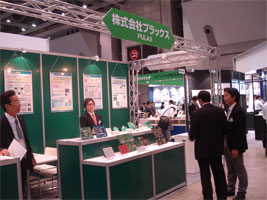
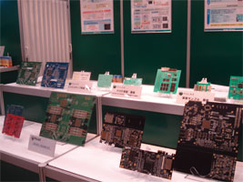

第41回 インターネプコン ジャパンに出展致します
開催日：2012年1月18日(水)〜20日(金) 10:00 〜 18:00
※20日(金)のみ17:00終了
会場：東京ビックサイト
小間番号： 東 39-33
URL：http://www.nepcon.jp/
会場では業務内容のご案内や弊社設計品・実装品の展示を予定しております。
皆さまのご来場をお待ち申しあげております。
年末年始休業日のお知らせ
平素は格別のご高配を賜り、厚く御礼申し上げます。
当社の年末年始の休業日について、下記のとおり、ご案内申し上げます。
ご迷惑をおかけいたしますが、予めご承知おき頂けますようお願い申し上げます。
【年末年始の休業期間】
2011年12月29日(木)〜2012年1月4日(水)
【営業開始日】
2012年1月5日(木)
「TOKYO ECO STYLE展2011 〜キラリと光るモノづくり交流展〜」に出展致します
開催日：2011年11月22日(火) 10:00 〜 17:00
会場：東京国際フォーラム 展示ホール1
小間番号：101（E zone）
会場では業務内容のご案内や弊社設計品・実装品の展示を予定しております。
皆さまのご来場をお待ち申しあげております。
TOKYO ECO STYLE展2011の概要はこちらをクリック
第14回 産業交流展2011に出展致します
開催日：2011年10月26日(水)〜28日(金) 10:00 〜 17:00
会場：東京ビックサイト 東5・6ホール
小間番号： 機械・金属-129-1 関連分野： 電子デバイス
URL：http://www.sangyo-koryuten.jp/
会場では業務内容のご案内や弊社設計品・実装品の展示を予定しております。
皆さまのご来場をお待ち申しあげております。
第22回 府中市工業技術展（ふちゅうテクノフェア）に出展致します
開催日：2011年10月21日(金)〜22日(土) 10:00 〜 17:00
会場：府中市市民会館（東京都府中市府中町2-24 ルミエール府中内）
主催：府中市
URL：http://www.tama5cci.or.jp/chamber/tekuno/22bosyu/index.html
会場では業務内容のご案内や弊社設計品・実装品の展示を予定しております。
皆さまのご来場をお待ち申しあげております。
第14回組込みシステム開発技術展（ESEC）に出展しました
|  |  |
開催日：2011年5月11日(水)〜13日(金)
東京ビッグサイトにて開催されました第14回組込みシステム開発技術展（ESEC）に出展しました。会場では業務内容のご案内や弊社設計品・実装品を展示致しました。
多くのお客様に御来場頂き、誠に有難うございました。
第14回組込みシステム開発技術展（ESEC）出展場所のお知らせ
|
開催日：2011年5月11日(水)〜13日(金) 10:00 〜 18:00 ※13日(金)のみ17:00終了 会場：東京ビッグサイト 出展場所：西10-59 URL：http://www.esec.jp/ 回路設計〜基板実装をトータルソリューションでご紹介します。ブース内では実装基板・パネル展示を設けております。 >>出展場所はこちら  PDFダウンロード(942KB) PDFダウンロード(942KB)
|
第14回組込みシステム開発技術展（ESEC）に出展致します
開催日：2011年5月11日(水)〜13日(金) 10:00 〜 18:00（13日(金)のみ17:00終了）
会場：東京ビッグサイト
出展場所：西10-59
URL：http://www.esec.jp/
回路設計〜基板実装をトータルソリューションでご紹介します。ブース内では実装基板・パネル展示を設けております。
東北地方太平洋沖地震の影響および対応について
| お得意様各位 |
| 株式会社プラックス |
| 代表取締役社長 松村 信幸 |
2011年3月11日に発生した東北地方太平洋沖地震により被災された皆さまに謹んでお見舞い申し上げます。 当社自体の工場の被害は特にございません。また、社員の無事は確認されております。 しかしながら、東京電力の計画停電により工場の稼動が計画しにくくなっております。さらに交通機関の混乱により社員の出勤がままならない状況でございます。出来るだけの対応は行いたいと思いますが、流通網も影響を受けておりますので、納期の遅延等が生じる場合もございます。 ご迷惑をおかけいたしますが、何卒ご理解の程、宜しくお願い申し上げます。 |
以上 |
『実装工場の無鉛化』移行についてのお知らせ
| お得意様各位 |
| 株式会社プラックス |
| 代表取締役社長 松村 信幸 |
| 「実装工場の無鉛化」移行について |
拝啓 現在まで、弊社の実装工場（日新事業所）では、「有鉛はんだ」及び「無鉛はんだ」による実装を行って参りました。 しかし、昨今に於いては環境側面から多くのお得意先様が「無鉛はんだ」使用による実装に移行され、「無鉛はんだ」実装を行う際に鉛の混入を防止するため、「無鉛はんだ専用工場」で対応する旨の御要望が、年々高まってきております。弊社に於きましても、受注の多くが「無鉛はんだ」実装の状況を踏まえ、「実装工場無鉛化」の対応を図る事と致しました。 今後、下記の実施時期以降につきましては、「無鉛はんだ」での実装とさせて頂きますので、何卒、事情ご賢察の上ご理解賜ります様お願い申し上げます。今後とも一層のお引立てとご愛顧を賜りますよう重ねてお願い申し上げます。 |
| 敬具 |
| −記− |
| ・実施時期： | 2011年3月1日(火)以降の納期御発注分より |
| ・実装工場： | 【日新事業所】 東京都府中市日新町１−４−５ |
| ※ | 有鉛はんだ実装基板につきましては、弊社実装協力メーカーにて引き続き対応を行わせて頂きますことも可能でございますので、御相談願います。 |
以上 | |
第10回たま工業交流展に出展致します
開催日：2011年2月18日(金)〜19日(土) 9:30 〜 16:00
会場：国営昭和記念公園みどりの文化ゾーン 花みどり文化センター
（東京都立川市緑町3173番地）
出展場所：B9
URL：http://www.tama-kogyo-koryuten.jp/index.html
回路設計〜基板実装をトータルソリューションでご紹介します。ブース内では実装基板・パネル展示を設けております。